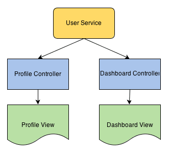

Thus service is a stateless object that contains some useful functions. These functions can be called from
anywhere; Controllers, Directive, Filters etc. Thus we can divide our application in logical units. The business
logic or logic to call HTTP url to fetch data from server can be put within a service object.
Putting business and other logic within services has many advantages. First it fulfills the principle of separation
of concern or segregation of duties. Each component is responsible for its own work making application more
manageable. Second this way each component can be more testable. AngularJS provides first class support for
unit testing. Thus we can quickly write tests for our services making them robust and less error prone

Consider above diagram. Here we divide our application in two controllers: 1. Profile and 2. Dashboard. Each of
these controllers require certain user data from server. Thus instead of repeating the logic to fetch data from
server in each controller, we create a User service which hides the complexity. AngularJS automatically inject
User service in both Profile and Dashboard controller. Thus our application becomes for modular and testable.
AngularJS Service vs Factory
AngularJS services as already seen earlier are singleton objects. These objects are application wide. Thus a
service object once created can be used within any other services or controllers etc.
We saw there are two ways (actually four, but for sake of simplicity lets focus on 2 ways that are widely used)
of defining an angularjs service. Using module.factory and module.service.
module.service( 'serviceName', function );
module.factory( 'factoryName', function );
When declaring serviceName as an injectable argument you will be provided with an instance of the function. In
other words new FunctionYouPassedToService(). This object instance becomes the service object that AngularJS
registers and injects later to other services / controllers if required.
When declaring factoryName as an injectable argument you will be provided with the value that is returned by
invoking the function reference passed to module.factory.
In below example we define MyService in two different ways. Note how in .service we create service methods using
this.methodname. In .factory we created a factory object and assigned the methods to it.